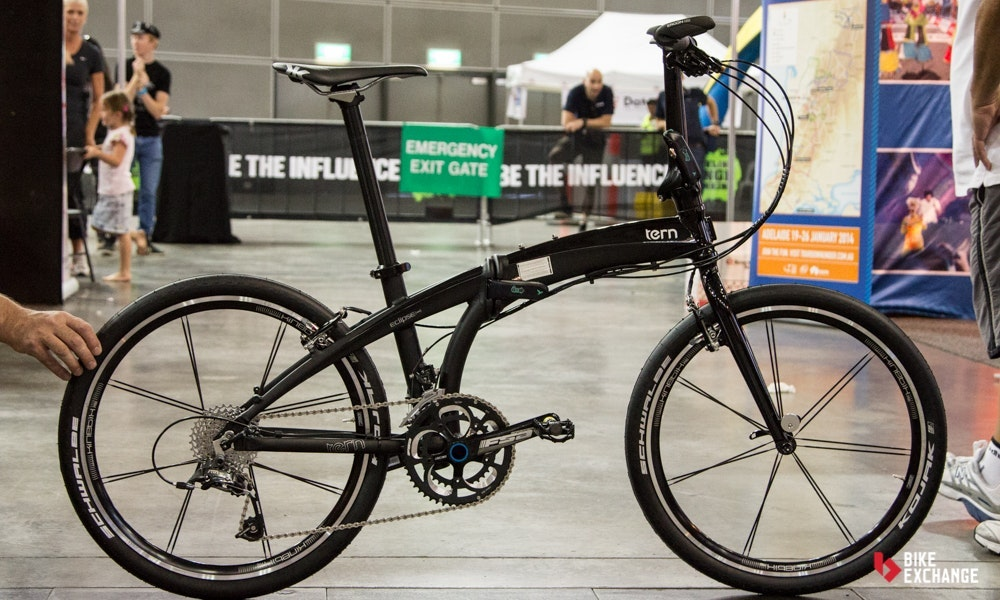

Bicicletas Plegables

Imagina una bicicleta que pueda ser almacenada en espacios reducidos, o transportarse sin líos en transportes públicos, como el nombre lo sugiere, las bicicletas plegables están hechas para colapsarse y ser fáciles de guardar y portar. La gran mayoría de estas bicicletas tienen equipo limitado, transmisiones y ruedas de menor tamaño, porque están hechas para ser una manera conveniente de transportarte en trechos cortos y bien mantenidos. No destacan por su velocidad ni su resistencia, pero brillan por lo útiles que pueden ser en el día a día.
Cuadro
Los materiales más comunes para las bicicletas plegables son el aluminio y el acero, aunque es posible encontrar algunos modelos de titanio y fibra de carbón. De manera general la geometría busca una postura erguida o semi-erguida dependiendo del modelo. Aunque existen diferentes diseños, una característica de los cuadros de las plegables es que únicamente el tubo superior se une al tubo de dirección. En las bicicletas convencionales, también el tubo inferior se une al tubo de dirección formando un triángulo. La razón de este diseño es permitir plegar el cuadro más o menos a la mitad. El diseño más común permite plegar el cuadro de la bicicleta y colapsar el manubrio. Sin embargo, existen otros diseños que además permiten plegar el triángulo conformado por las vainas superior e inferior y por lo tanto colapsar la rueda trasera bajo el tubo superior del cuadro. Al ser de cuadro bajo, las plegables tienen un poste de dirección largo, equivalente a la potencia en una bicicleta convencional. Se pueden encontrar modelos con postes de dirección telescópicos y por lo tanto su altura es regulable; y otros con altura fija.
Manubrio/manillar
La gran mayoría de las bicicletas plegables están concebidas para uso urbano por lo que generalmente las encontrarás con manubrios rectos o de doble altura. Sin embargo, existen algunos modelos especialmente diseñados para viajes en carretera, ya sea de ruta o viajes de turismo, que usan dropbar o variantes de los manubrios de trekking.
Ruedas
Otra característica de las plegables son sus ruedas pequeñas. El rodado más común es de 20″, aunque es posible encontrar bicicletas de 16″, 24″ y 26″. Existen plegables con rodados más pequeños, pero resultan poco prácticas en uso urbano. Entre más pequeña sea la rueda, la bicicleta ocupará menos espacio al plegarse.
Velocidades
En cuanto al número y rango de velocidades, las plegables vienen en una gran variedad. Las hay de una sola velocidad hasta de 27 velocidades. Recordemos que estas bicis se diseñan principalmente para usarse en la ciudad por lo que lo más común es encontrarlas de 1 a 7 velocidades. Se pueden encontrar con cambios de desviador o con cambios internos.